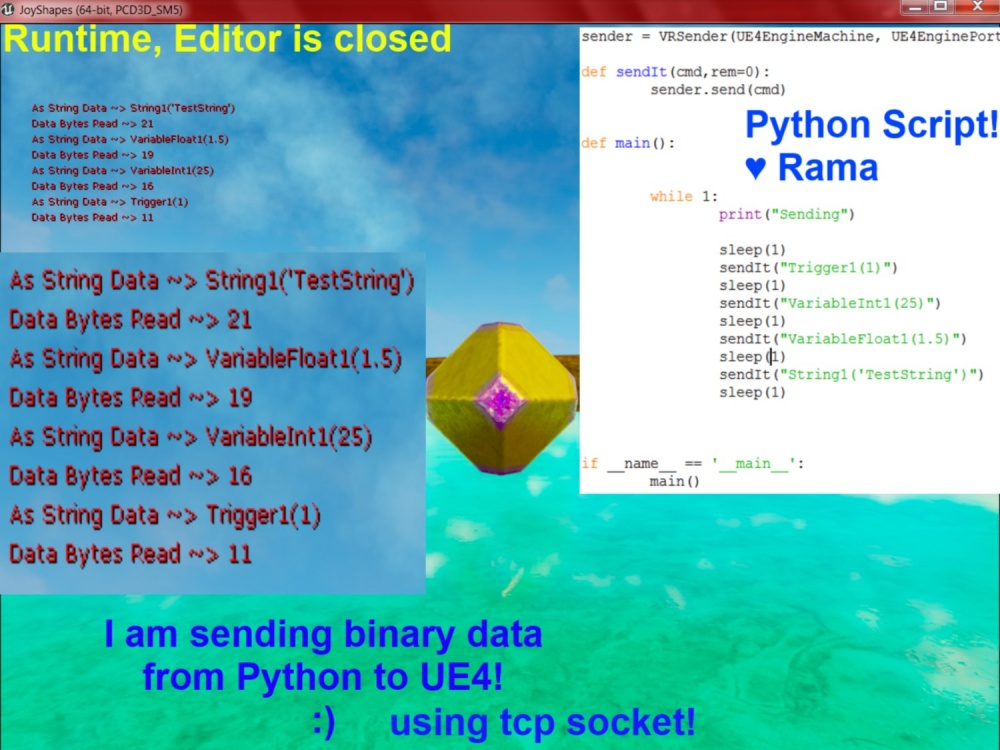

TCP Socket Listener, Receive Binary Data From an IP/Port Into UE4, (Full Code Sample)
Contents
Overview
Author: ( )
Dear Community,
In this tutorial I am giving you the code I used to enable a python script to communicate with UE4 over a TCP socket!
That's right!
I am just straight up giving you my whole source code that I spent the past several hours writing!
♥
Rama
COMMUNITY CAVEAT [02/06/2017, UE4.14.3] From the readme found in the Networking module ( <Path_to_Engine>/Source/Runtime/Networking/Readme.txt ):
"This module is an internal R&D effort to explore how the socket subsystem could be improved. Production use is NOT encouraged at this point."
For the reader of this tutorial this means the module will likely perpetually change as development on the UE4 is progressing. For example, since the initial writing of this wiki tutorial the FTcpListener class has been added which makes a lot of Rama's delightful work redundant. However, in the future this class may again be changed or removed entirely.

Build.CS
You will need at least this to work with sockets in UE4
PublicDependencyModuleNames.AddRange(new string[] {
"Core",
"CoreUObject",
"Engine",
"InputCore",
"Sockets","Networking"
});
.h
#include "Networking.h"
//AYourClass definition
public:
FSocket* ListenerSocket;
FSocket* ConnectionSocket;
FIPv4Endpoint RemoteAddressForConnection;
bool StartTCPReceiver(
const FString& YourChosenSocketName,
const FString& TheIP,
const int32 ThePort
);
FSocket* CreateTCPConnectionListener(
const FString& YourChosenSocketName,
const FString& TheIP,
const int32 ThePort,
const int32 ReceiveBufferSize = 2*1024*1024
);
//Timer functions, could be threads
void TCPConnectionListener(); //can thread this eventually
void TCPSocketListener(); //can thread this eventually
//Format String IP4 to number array
bool FormatIP4ToNumber(const FString& TheIP, uint8 (&Out)[4]);
//Rama's StringFromBinaryArray
FString StringFromBinaryArray(const TArray<uint8>& BinaryArray);
.cpp
The flow goes basically from the top down, you can probably guess the purpose of this first function.
void AYourClass::Laaaaaauuuunch()
{
//IP = 127.0.0.1, Port = 8890 for my Python test case
if( ! StartTCPReceiver("RamaSocketListener", "127.0.0.1", 8890))
{
//UE_LOG "TCP Socket Listener Created!"
return;
}
//UE_LOG "TCP Socket Listener Created! Yay!"
}
//Rama's Start TCP Receiver
bool AYourClass::StartTCPReceiver(
const FString& YourChosenSocketName,
const FString& TheIP,
const int32 ThePort
){
//Rama's CreateTCPConnectionListener
ListenerSocket = CreateTCPConnectionListener(YourChosenSocketName,TheIP, ThePort);
//Not created?
if(!ListenerSocket)
{
GEngine->AddOnScreenDebugMessage(-1, 5.f, FColor::Red, FString::Printf(TEXT("StartTCPReceiver>> Listen socket could not be created! ~> %s %d"), *TheIP, ThePort));
return false;
}
//Start the Listener! //thread this eventually
GetWorldTimerManager().SetTimer(this,
&AYourClass::TCPConnectionListener, 0.01, true);
return true;
}
//Format IP String as Number Parts
bool AYourClass::FormatIP4ToNumber(const FString& TheIP, uint8 (&Out)[4])
{
//IP Formatting
TheIP.Replace( TEXT(" "), TEXT("") );
//~~~~~~~~~~~~~~~~~~~~~~~~~~~~~~~
// IP 4 Parts
//String Parts
TArray<FString> Parts;
TheIP.ParseIntoArray( &Parts, TEXT("."), true );
if ( Parts.Num() != 4 )
return false;
//String to Number Parts
for ( int32 i = 0; i < 4; ++i )
{
Out[i] = FCString::Atoi( *Parts[i] );
}
return true;
}
//Rama's Create TCP Connection Listener
FSocket* AYourClass::CreateTCPConnectionListener(const FString& YourChosenSocketName,const FString& TheIP, const int32 ThePort,const int32 ReceiveBufferSize)
{
uint8 IP4Nums[4];
if( ! FormatIP4ToNumber(TheIP, IP4Nums))
{
VShow("Invalid IP! Expecting 4 parts separated by .");
return false;
}
//~~~~~~~~~~~~~~~~~~~~~~~~~~~~~~~
//Create Socket
FIPv4Endpoint Endpoint(FIPv4Address(IP4Nums[0], IP4Nums[1], IP4Nums[2], IP4Nums[3]), ThePort);
FSocket* ListenSocket = FTcpSocketBuilder(*YourChosenSocketName)
.AsReusable()
.BoundToEndpoint(Endpoint)
.Listening(8);
//Set Buffer Size
int32 NewSize = 0;
ListenSocket->SetReceiveBufferSize(ReceiveBufferSize, NewSize);
//Done!
return ListenSocket;
}
//Rama's TCP Connection Listener
void AYourClass::TCPConnectionListener()
{
//~~~~~~~~~~~~~
if(!ListenerSocket) return;
//~~~~~~~~~~~~~
//Remote address
TSharedRef<FInternetAddr> RemoteAddress = ISocketSubsystem::Get(PLATFORM_SOCKETSUBSYSTEM)->CreateInternetAddr();
bool Pending;
// handle incoming connections
if (ListenerSocket->HasPendingConnection(Pending) && Pending)
{
//~~~~~~~~~~~~~~~~~~~~~~~~~~~~~~~~~~~
//Already have a Connection? destroy previous
if(ConnectionSocket)
{
ConnectionSocket->Close();
ISocketSubsystem::Get(PLATFORM_SOCKETSUBSYSTEM)->DestroySocket(ConnectionSocket);
}
//~~~~~~~~~~~~~~~~~~~~~~~~~~~~~~~~~~~
//New Connection receive!
ConnectionSocket = ListenerSocket->Accept(*RemoteAddress, TEXT("RamaTCP Received Socket Connection"));
if (ConnectionSocket != NULL)
{
//Global cache of current Remote Address
RemoteAddressForConnection = FIPv4Endpoint(RemoteAddress);
//UE_LOG "Accepted Connection! WOOOHOOOO!!!";
//can thread this too
GetWorldTimerManager().SetTimer(this,
&AYourClass::TCPSocketListener, 0.01, true);
}
}
}
//Rama's String From Binary Array
FString AYourClass::StringFromBinaryArray(TArray<uint8> BinaryArray)
{
BinaryArray.Add(0); // Add 0 termination. Even if the string is already 0-terminated, it doesn't change the results.
// Create a string from a byte array. The string is expected to be 0 terminated (i.e. a byte set to 0).
// Use UTF8_TO_TCHAR if needed.
// If you happen to know the data is UTF-16 (USC2) formatted, you do not need any conversion to begin with.
// Otherwise you might have to write your own conversion algorithm to convert between multilingual UTF-16 planes.
return FString(ANSI_TO_TCHAR(reinterpret_cast<const char*>(BinaryArray.GetData()));
}
//Rama's TCP Socket Listener
void AYourClass::TCPSocketListener()
{
//~~~~~~~~~~~~~
if(!ConnectionSocket) return;
//~~~~~~~~~~~~~
//Binary Array!
TArray<uint8> ReceivedData;
uint32 Size;
while (ConnectionSocket->HasPendingData(Size))
{
ReceivedData.Init(FMath::Min(Size, 65507u));
int32 Read = 0;
ConnectionSocket->Recv(ReceivedData.GetData(), ReceivedData.Num(), Read);
//GEngine->AddOnScreenDebugMessage(-1, 5.f, FColor::Red, FString::Printf(TEXT("Data Read! %d"), ReceivedData.Num()));
}
//~~~~~~~~~~~~~~~~~~~~~~~~~~~~~~~~~~~~
if(ReceivedData.Num() <= 0)
{
//No Data Received
return;
}
VShow("Total Data read!", ReceivedData.Num() );
GEngine->AddOnScreenDebugMessage(-1, 5.f, FColor::Red, FString::Printf(TEXT("Data Bytes Read ~> %d"), ReceivedData.Num()));
//~~~~~~~~~~~~~~~~~~~~~~~~~~~~~~~~~~~~~~~
// Rama's String From Binary Array
const FString ReceivedUE4String = StringFromBinaryArray(ReceivedData);
//~~~~~~~~~~~~~~~~~~~~~~~~~~~~~~~~~~~~~~~
VShow("As String!!!!! ~>",ReceivedUE4String);
GEngine->AddOnScreenDebugMessage(-1, 5.f, FColor::Red, FString::Printf(TEXT("As String Data ~> %s"), *ReceivedUE4String));
}
How It Works
The first socket listens on the port and IP supplied, and if a connection is received on this port, then the actual ListenerSocket is created.
The ListenerSocket is run in very short looping timer of 0.01 seconds.
You could also use a thread for this :)
Whenever the ListenerSocket receives data, it makes sure to gather all of it using the while loop, and then I convert the results into a FString.
//Binary Array!
TArray<uint8> ReceivedData;
uint32 Size;
while (ConnectionSocket->HasPendingData(Size))
{
ReceivedData.Init(FMath::Min(Size, 65507u));
int32 Read = 0;
ConnectionSocket->Recv(ReceivedData.GetData(), ReceivedData.Num(), Read);
//GEngine->AddOnScreenDebugMessage(-1, 5.f, FColor::Red, FString::Printf(TEXT("Data Read! %d"), ReceivedData.Num()));
}
If you are not receiving string data you can skip that part and just pass out the binary array itself :)
Another TCP Source Code, by alfalfasprossen
Community Member alfalfasprossen has been developing a communication interface between UE4 and Maya since 2014 using TCP sockets. Check out his code and see if you can learn some more!
Another TCP Source, by Phi.WOP
Here is another implementation you can check out from a UE4 Community member!
UDP
I have written a wiki on communicating via UDP from one UE4 instance to another here!
Conclusion
I am sharing my last several hours of research with you in fully functional C++ code format!
Enjoy!
( )